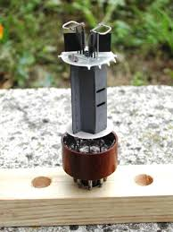
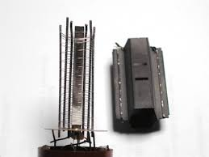
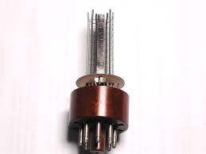

Sì, anche le valvole (quelle elettroniche intendo) muoiono, e ci sono per loro tre modi di morire, due traumatici e uno per consunzione.
(A dir il vero c'è stato anche un quarto modo, ed quello che le ha fatte morire tutte in un colpo: la tecnologia che avanzando le ha spiazzate sostituendole con qualcosa di molto più piccolo ed efficiente... ma facciamo finta di essere ancora nell'era preistorica dei tubi a vuoto).
La morte per consunzione è il più naturale ed intuitivo: siccome tutto ciò che lavora si consuma, è ovvio che a forza di emettere elettroni il povero catodo (un tubicino rivestito di ossido di bario) riscaldato dal filamento ad un certo punto si stancherà di emetterli e la valvola verrà dichiarata "esaurita".
Ma ciò succede dopo migliaia di ore di onesto funzionamento, è un decadimento progressivo ma molto lento.
Le due morti traumatiche sono invece istantanee, come un umano infarto fulminante.
La prima è quando si interrompe il filamento che riscalda il catodo.
Il filamento è un sottile filo di tungsteno (esattamente come quello di una lampadina) e come tale può "bruciarsi".
Esso lavora a tensione e temperatura molto più basse di quelle di una lampadina, ma per cause accidentali può interrompersi. Ciò succede raramente, ma succede.
Allora il catodo che lo circonda non sarà più riscaldato, gli elettroni non verranno più emessi e la valvola verrà dichiarata "bruciata".
Vedete ora nella foto qui sotto quella macchia bianca sulla testa della EL34?

E' un bruttissimo segno, vuol dire che la valvola è morta per la seconda causa traumatica.
E' quella che avviene quando, per cause imprecisate, entra dell'aria nella valvola da una microscopica incrinatura del vetro.
Allora gli elettroni, anzichè poter andarsene dal catodo all'anodo indisturbati in un vuoto quasi cosmico, incontrano montagne di molecole di gas e non riescono più a staccarsi dal loro emettitore.
In questo raro ma ancora possibile caso si dichiara che la sfortunata valvola "ha perso il vuoto".
E' esattamente quello che è successo alla mia EL34, dopo anni di onorato servizio in un alimentatore stabilizzato da qualche centinaio di volt.
La EL34 è una valvola octal (zoccolo grande a otto piedini) e precisamente un pentodo di potenza, usato per lo più come tubo finale in amplificatori audio.
Ora, con la moda degli audiofili valvolati, è ancora reperibile senza difficoltà, quasi sempre ex made in Russia o made in Ciaina.
Ricordo che da piccolo avevo letto da qualche parte che la placca delle valvole (l'anodo viene chiamato così) era costruita in molibdeno. C'avevo sempre creduto poco, ma stavolta mi son proprio levato la curiosità di verificarlo, visto che avevo una bella valvolona pronta al sacrificio.
Ammazzare una valvola ancora viva mi sarebbe dispiaciuto e non l'avrei fatto.
Allora... mano al martello e via una bella pacca sulla pancia della EL34 debitamente avvolta in uno straccio.
La foto seguente mostra l'interno: ciò che si vede meglio è la placca, all'interno della quale vi sono gli altri elettrodi, ovvero il catodo e le tre griglie.
Il tutto è compreso ed isolato tra due dischetti di mica muscovite di prima scelta.

Per veder meglio occorre togliere la placca, ed quello che ho fatto per le foto successive.


Si intravvedono le sottilissime griglie spiralate attorno al catodo centrale; la distanza reciproca tra i vari elettrodi ed il passo di avvolgimento determinano le caratteristiche elettriche specifiche di "quella" valvola rispetto alle numerosissime altre.
(La EL34 è un pentodo perchè ha cinque elettrodi: il catodo, la placca e tre griglie).
Rimane ora l'analisi degli elettrodi: vediamo di cosa sono fatti.
Taglio un frammento di quella sottilissima laminetta (anodizzata scura per un migliore scambio termico) e via con un po' di HCl... si scioglie alla grande!
Ad un po' di soluzione aggiungo cautamente NaOH ed il colore verdino già mi insospettisce... beh, la voglio far breve: alla fine risulta volgare ferraccio, testimoniato rosso su bianco e blù su bianco rispettivamente dal tiocianato e dal ferrocianuro.
Una banale calamita (che non ho voluto usare subito per scaramanzia) ha messo la pietra definitiva sulla faccenda.
Ferraccio ancora una volta! Sottilissimo lamierino ben presentato ma sempre ferraccio!
(Esistono valvole speciali nei quali la placca è di altri materiali più nobili, ma sono valvole speciali che esulano da questo discorso che parla di tubi comuni).
E gli altri elettrodi? Questi almeno sono veramente di nichel come supposto?
Ancora un po' di acido (adesso tocca all'HNO3) e sarò breve anche stavolta: con NaOH vien giù il bel verde mela dell'idrossido di nichel, poi controfirmato dalla dimetilgliossima.
E' nichel, non ci piove!
Non ho controllato il sottilissimo deposito bianco che riveste il catodo, ma questo so già per certo che è ossido di bario (magari anche con SrO) perchè queste sostanze hanno un alto potere emissivo di elettroni anche alla temperatura relativamente bassa del calor rosso al quale il catodo viene riscaldato.
Onore e gloria alla povera e vetustissima EL34: si era resa utile da viva e lo è stata fino all'ultimo, sacrificandosi per la scienza anche da morta...
2 commenti